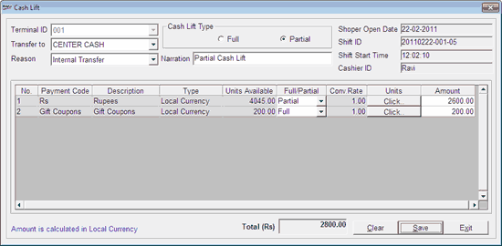

In a retail store, Cash Lift is a terminology used to address the process of transferring collections from a Till/ Counter, for various reasons.
The Cash Lift option in Till Management allows you to perform complete or partial transfer of collections from a Till/ Counter to another Till/ Counter or CENTER CASH (default cash collection point). You can define the cash limit for the Till/ (s), as per requirement. When the total amount of a Till reaches the specified limit, the corresponding Till will be alerted with a message to perform cash lift to the cash collection point. You can also record any form of internal transfer of cash among cashiers/ counters.
Note: Transfer of the entire amount (full cash lift) from a Till is mandatory for closing the Till.
How to reach: Cash > Till Management > Cash Lift
The Cash Lift window is displayed.

Terminal ID: Displays the terminal ID of the Till.
Transfer to: Select the destination point to which the cash/ collections needs to be transferred, from the dropdown list. By default, CENTER CASH is selected, in the case of a single user environment.
In the case of a multi user environment, the dropdown list will have the terminal ID (node ID) of other nodes available in the network. You can also configure any of the nodes in the network as CENTER CASH POINT.
Reason: Select the appropriate reason, from the dropdown list. The options available are Limit Reached, Counter Close and Internal Transfer. You can add some more options (reasons), if required, in the dropdown list, by configuring it in the Shoper template.
Cash Lift Type: Select Full or Partial, as per requirement. By default, Partial cash lift option is selected.
You can select:
Full: To transfer the entire amount available in the Till
Partial: To transfer a part of the total amount available in the Till
Narration: Enter appropriate narration regarding the activity.
Shoper Open Date: Displays the current Shoper date.
Shift ID: Displays the current Shift ID of the Till.
Shift Start Time: Displays the start time of the current shift.
Cashier ID: Displays the user ID (login ID) of the cashier who opened the current shift.
Cash Lift Grid
By default, the details of the cash payment mode, as catalogued in Shoper 9, are displayed in the grid. The remaining payment modes catalogued in Shoper 9 will be available in the grid, if configured in the Shoper template.
The details like payment code, description and currency type (whether local or foreign currency) as catalogued in Shoper 9 are displayed in the respective columns.
Note: If multiple currencies are catalogued in Shoper 9, the details of the individual currencies are displayed separately.
Note: If the Cash Lift Type is selected as Full, you cannot make any changes in the grid.
Units Available: Displays the units of the payment mode available in the Till. By default, this information is made unavailable. You can display this information based on parameter setting.
Full/ Partial: Select Full or Partial, as required.
You can select:
Full: To transfer the entire units available under the payment mode
Partial: To transfer a part of the total units available under the payment mode
Conv. Rate: Displays the rate at which the payment mode will be converted to the local currency as defined in the payment mode catalogue.
Units: In this field, you have to enter the units of the payment mode to be transferred. You can enter the units under each payment mode with denominations, if configured.
The Click.. button in the Units column indicates that the units needs to be entered denomination wise.
Note: If denomination details are not applicable, you can enter the total units of the payment mode in the Units column.
Amount: Displays the total amount of the payment mode to be transferred. The total amount for each payment mode is calculated as:
Amount = Units of the payment mode * Conversion Rate
The total amount is calculated in the local currency.
Total (Rs): Displays the total amount to be transferred to the destination point for the current Shift ID. This amount is the total of all the values in the Amount column.